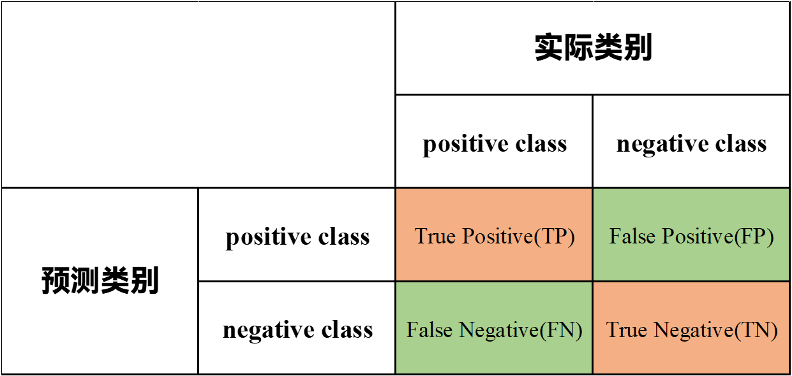
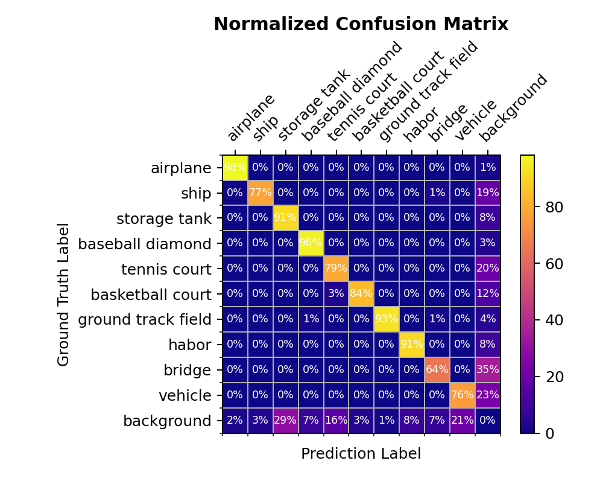
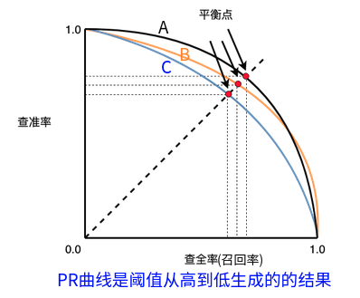

模型评价指标
Contents
模型评价指标#
在我们学习机器学习以及深度学习，甚至在计算机视觉领域，我们不可避免的要利用一些指标评价模型，在本小节中，我们介绍了模型相关评价指标，
经过本节的学习 ，我们将会学习到：
模型常用的相关评价指标
不同评价指标的适应性以及优缺点
混淆矩阵#
混淆矩阵（也称误差矩阵）是机器学习和深度学习中表示精度评价的一种标准格式，常用n行n列的矩阵形式来表示。其列代表的是预测的类别，行代表的是实际的类标，以一个常见的二分类的混淆矩阵为例。我们会发现二分类的混淆矩阵包括TP, FP, FN, TN，其中TP为True Positive，True代表实际和预测相同，Positive代表预测为正样本。同理可得，False Positive (FP)代表的是实际类别和预测类标不同，并且预测类别为正样本，实际类别为负样本；False Negative (FN)代表的是实际类别和预测类标不同，并且预测类别为负样本，实际类别为正样本；True Negative (TP)代表的是实际类别和预测类标相同，预测类别和实际类别均为负样本。
在这里我们以一个二分类的例子来帮助大家理解。假设我们是某核酸检测机构，将对100个人进行核酸检测，实际结果为98个阴性，2个阳性，但是我们的模型对核酸检测结果进行预测，预测结果为94个阴性，6个阳性结果，在这里我们定义核酸结果阴性为正样本，核酸结果阳性为负样本。在这个例子中，TP代表实际为阴性且被预测为阴性的数量，共有94人；FP代表实际为阳性，模型预测为阴性的数量，共有0人；FN代表实际为阴性被模型判断为阳性的数量，共有4人；TN代表实际为阳性，被模型识别为阳性的数量，共有2人。 于是我们就可以得到下面的这个混淆矩阵。
我们在此也展示一个10类标+1个背景所产生的归一化的混淆矩阵
我们在拥有混淆矩阵后，可以计算Accuracy，Precision，Recall，F1 Score等衡量模型的评价指标。关于混淆矩阵的代码实现，我们可以使用sklearn.metrics.confusion_matrix()函数进行计算
from sklearn.metrics import confusion_matrix
def compute_confusion_matrix(labels,pred_labels_list,gt_labels_list):
pred_labels_list = np.asarray(pred_labels_list)
gt_labels_list = np.assarray(gt_labels_list)
matrix = confusion_matrix(test_label_list,
pred_label_list,
labels=labels)
return matrix
Overall Accuracy#
Overall Accuracy代表了所有预测正确的样本占所有预测样本总数的比例，结合上述例子，我们可以用下述公式表示： $\( \rm{OA} =\frac{\rm{TP+TN}}{\rm{TP+TN+FP+FN}} = \frac{N_{correct}}{N_{total}} \)\( 这里的分类正确代表了正样本被正确分类为正样本，负样本正确分类为负样本。准确率是描述模型最简单的指标，Acc的缺点主要在于假如说我们举得例子，在样本中，核酸结果成阴性占据了模型98%， 假如说模型不调试分类，我只要一直判断核酸结果呈阴性，那我们的模型最终效果可能会更好，但是实际上模型的效率以及准确率都是非常低下的。当我们的样本正负样本极端不平衡时Acc这个评价指标其实是没有意义的。我们再回到上面的例子中，可以计算在该例子中Acc = 0.96. \)\( OA=\frac{\rm{TP+TN}}{100}= \frac{96}{100}= 0.96 \)$
def compute_oa(matrix):
"""
计算总体准确率,OA=(TP+TN)/(TP+TN+FP+FN)
:param matrix:
:return:
"""
return np.trace(matrix) / np.sum(matrix)
Average accuracy#
Average accuracy( AA) 代表的是平均精度的计算，平均精度计算的是每一类预测正确的样本与该类总体数量之间的比值，最终再取每一类的精度的平均值。代码实现中，我们使用numpy的diag将混淆矩阵的对角线元素取出，并且对于混淆矩阵进行列求和，用对角线元素除以求和后的结果，最后对结果计算求出平均值。
def compute_aa(matrix):
"""
计算每一类的准确率,AA=(TP/(TP+FN)+TN/(FP+TN))/2
:param matrix:
:return:
"""
return np.mean(np.diag(matrix) / np.sum(matrix, axis=1))
Kappa系数#
Kappa系数是一个用于一致性检验的指标，也可以用于衡量分类的效果。对于分类问题而言，一致性就是模型预测结果和实际分类结果是否一致。kappa系数的计算同样也是基于混淆矩阵进行计算，取值为-1到1之间,通常大于0。我们可以使用下述公式进行计算： $\( kappa = \frac{p_o-p_e}{1-p_e}\\ p_o = OA\\ p_e = \frac{\sum_{i} (x_i \cdot x_j)}{(\sum_{j=0}^n\sum_{i=0}^{n} x_{ij})^2} \)$
def compute_kappa(matrix):
"""
计算kappa系数
:param matrix:
:return:
"""
oa = self.compute_oa(matrix)
pe = 0
for i in range(len(matrix)):
pe += np.sum(matrix[i]) * np.sum(matrix[:, i])
pe = pe / np.sum(matrix) ** 2
return (oa - pe) / (1 - pe)
Recall#
Recall也称召回率，代表了实际为正样本并且也被正确识别为正样本的数量占样本中所有为正样本的比例，可以用下述公式进行表示 $\( \rm{Recall} = \frac{\rm{TP}}{\rm{TP + FN}} \)$
Recall是判断模型正确识别所有正样本的能力。结合我们所举的例子，代表了模型对于正样本的识别能力，也能较好的反应模型的优劣。与Precision不同的是，我们是反映了模型预测时候有多少阴性（正样本）被检测出来。在例子中代表了实际为阴性被模型正确判断为阴性的数量占实际为阴性的比例，即 $\( \rm{Recall} = \frac{94}{98}=0.959 \)$
Precision#
Precision也称精准率，代表的是在全部预测为正的结果中，被预测正确的正样本所占的比例，可以用下述公式进行表示 $\( \rm{Precision} = \frac{\rm{TP}}{\rm{TP + FP}} \)$ FP代表了阳性患者被预测为阴性（正样本），TP代表了阴性被正确预测为阴性。相较于Acc，Precision更能较好的反应出模型对于正样本（阴性）识别能力。和Recall不同的是，Precision代表了预测结果中有多少样本是分类正确的。 在实际应用场景中，我们继续结合核酸的例子，当我们在进行全面核酸检测时，我们的希望在于模型尽可能少的漏掉阳性患者，此时认为模型Precision显得更为重要。
F1#
F1在模型评估中也是一种重要的评价指标，F1可以解释为召回率（Recall）和P（精确率）的加权平均，F1越高，说明模型鲁棒性越好。人们希望有一种更加广义的方法定义F-score，希望可以改变P和R的权重，于是人们定义了\(F_{\beta}\)，其定义式如下： $\( \rm{F_{\beta}}=\frac{\left(1+\beta^{2}\right) \times P \times R}{\left(\beta^{2} \times P\right)+R} \)$
当 \(\beta\) > 1 时，更偏好召回(Recall)
当 \(\beta\) < 1 时，更偏好精准(Precision)
当 \(\beta\) = 1 时，平衡精准和召回，即为 F1
当有多个混淆矩阵（多次训练、多个数据集、多分类任务）时，有两种方式估算 “全局” 性能：
macro 方法：先计算每个 PR，取平均后，再计算 F1
micro 方法：先计算混淆矩阵元素的平均，再计算 PR 和 F1
PR曲线#
在深度学习常用指标中，PR曲线也能很直观的反应模型好坏。我们用一副经典图来说明问题：
横轴是召回率，纵轴代表了P（精确率)，P-R曲线上的一个点代表着，在某一阈值下，模型将大于该阈值的结果判定为正样本，小于该阈值的结果判定为负样本，此时返回结果对应的召回率和精确率。整条P-R曲线是通过将阈值从高到低移动而生成的。原点附近代表当阈值最大时模型的精确率和召回率，在PR曲线我们可以从图中直观的看到某一个曲线被另外一条曲线完全包裹，所包围的面积大于另一条曲线包围的面积，举例图中可以说明A模型的性能优于B和C。 参考代码如下：
from typing import List, Tuple
import matplotlib.pyplot as plt
def get_confusion_matrix(
y_pred: List[int],
y_true: List[int]
) -> Tuple[int, int, int, int]:
length = len(y_pred)
assert length == len(y_true)
tp, fp, fn, tn = 94, 0, 4, 2
for i in range(length):
if y_pred[i] == y_true[i] and y_pred[i] == 1:
tp += 1
elif y_pred[i] == y_true[i] and y_pred[i] == 0:
tn += 1
elif y_pred[i] == 1 and y_true[i] == 0:
fp += 1
elif y_pred[i] == 0 and y_true[i] == 1:
fn += 1
return (tp, fp, tn, fn)
def calc_p(tp: int, fp: int) -> float:
return tp / (tp + fp)
def calc_r(tp: int, fn: int) -> float:
return tp / (tp + fn)
def get_pr_pairs(
y_pred_prob: List[float],
y_true: List[int]
) -> Tuple[List[int], List[int]]:
ps = [1]
rs = [0]
for prob1 in y_pred_prob:
y_pred_i = []
for prob2 in y_pred_prob:
if prob2 < prob1:
y_pred_i.append(0)
else:
y_pred_i.append(1)
tp, fp, tn, fn = get_confusion_matrix(y_pred_i, y_true)
p = calc_p(tp, fp)
r = calc_r(tp, fn)
ps.append(p)
rs.append(r)
ps.append(0)
rs.append(1)
return ps, rs
y_pred_prob = [0.9, 0.8, 0.7, 0.6, 0.55, 0.54, 0.53, 0.52, 0.51, 0.505,
0.4, 0.39, 0.38, 0.37, 0.36, 0.35, 0.34, 0.33, 0.3, 0.1]
y_true = [1, 1, 0, 1, 1, 1, 0, 0, 1, 0, 1, 0, 1, 0, 0, 0, 1, 0, 1, 0]
y_pred = [1] * 10 + [0] * 10
ps, rs = get_pr_pairs(y_pred_prob, y_true)
fig, ax = plt.subplots(nrows=1, ncols=1, figsize=(12, 5))
ax.plot(rs, ps);
置信度#
在目标检测中，我们通常需要将边界框内物体划分为正样本和负样本。我们使用置信度这个指标来进行划分，当小于置信度设置的阈值判定为负样本（背景），大于置信度设置的阈值判定为正样本.
IOU#
雅卡尔指数( Jaccard index)，交并比，也是我们在目标检测和语义分割领域经常见到的IOU。 IOU可以去除目标检测的冗余框进行后处理优化并且还可以计算Loss达到优化模型的效果。
$\(
\rm{IOU} = \frac{A\cap B}{A\cup B}=\frac{S_{交集}}{S_{并集}}
\)$
分子部分是模型预测框与真实标注框之间的重叠区域，分母部分是两者的并集，预测框和实际框所占有的总区域，在实际模型识别时会根据我们自己设定合适的阈值来判定正负样本。

一般情况下在目标检测任务中，人们将IOU \(\geq\)0.7时判定为正样本，其余情况判定为负样本。
AP#
结合我最近做的实验结合理解下，AP事实上是PR曲线所包含的面积，当我们取不同的置信度，可以获得不同的P和Recall，PR曲线下面所包含的面积就是模型检测某个类的AP值。我们仍然以上述核酸检测为例，
mAP#
我们熟悉了上面的基础概念，就可以计算模型的mAP了，全称mean Average Precision，mAP则是所有类的AP值的平均值。通过上述的PR曲线，我们可以得到对应的AP值，通过了解， (1)在2010年以前，VOC竞赛AP值的定义为：对于一条AP曲线，我们把Recall的值从0-1划分为11分，即：0、0.1、0.2、0.3、0.4、0.5、0.6、0.7、0.8、0.9、1.0，然后基于每个小区间计算Precision的最大值，然后计算他们的总和求平均，就是AP值，被称作11-poinst-interpolation. (2) 2010年后，重新定义为PR曲线上所有的Recall，选取大于等于这些Recall值时的最大值Precision,计算PR曲线下面面积作为AP值.被称作all-poinst-interpolation.